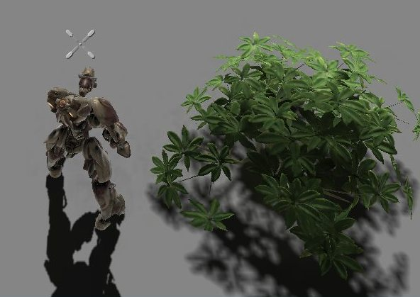
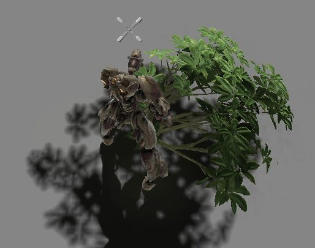
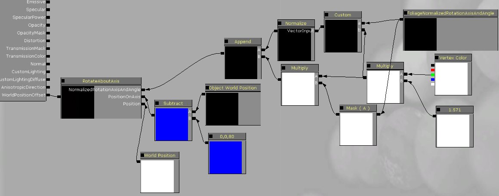
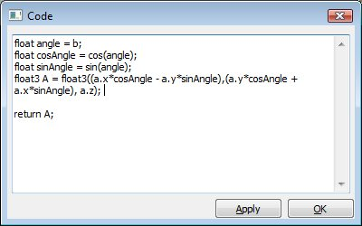
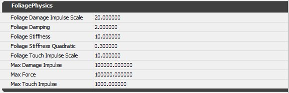

UDN
Search public documentation:
InteractiveFoliageActorKR
English Translation
日本語訳
中国翻译
Interested in the Unreal Engine?
Visit the Unreal Technology site.
Looking for jobs and company info?
Check out the Epic games site.
Questions about support via UDN?
Contact the UDN Staff
日本語訳
中国翻译
Interested in the Unreal Engine?
Visit the Unreal Technology site.
Looking for jobs and company info?
Check out the Epic games site.
Questions about support via UDN?
Contact the UDN Staff
인터랙티브 포울리지 액터
문서 변경내역: Daniel Wright 작성.
개요
간단한 설정
- Content 브라우저에서 스태틱 메시를 선택합니다. 콜리전은 스태틱 메시 상에서는 필요치 않습니다.
- 에디터 뷰포트에서 오른쪽 클릭하여, [Add Actor](액터 추가) -> [Add InteractiveFoliageActor](InteractiveFoliageActor 추가)를 선택합니다.
- WorldPositionOffsetKR에 영향을 미치는FoliageNormalizedRotationAxisAndAngle 를 사용하기 위해 머티리얼 설정을 적용합니다.
간단한 머티리얼 설정

Object World Position에서 subtract로의 연결은 세계 공간에서 아래로 회전하는 포인트를 이동시키기 위한 것입니다. 이렇게 설정하면 나무덤불을 길 밖으로 밀어낼 수 있게 되며, 힘을 가하는 것을 멈추면 나무덤불은 다시 제자리로 돌아옵니다.


물론 스크린샷으로는 애니메이션이 제대로 전달되지 않으므로 다음 동영상에서 결과를 더 잘 볼 수 있습니다.
WalkingThroughFields.mp4
Explosions.mp4
고급 머티리얼 설정
여기 제시된 예는 메시의 각 부분에 대한 회전축을 변경하기 위해 정점 색상에서 오프셋을 사용하는 머티리얼입니다.

위의 머티리얼에서 Custom 노드:

여기, 작동되는 머티리얼에 대한 동영상이 있습니다. 메시의 각 부분을 터치하면 각기 다른 방향으로 어떻게 회전하는지 눈여겨보십시오. AdvancedAnimation.mp4
최상의 결과를 위해 주변 바람(ambient wind)과 함께 사용하도록 하십시오. WindDirectionAndSpeed 노드는 객체 사이에 바람 애니메이션을 가미하는데 유용합니다.
스프링 물리 설정

- FoliageDamageImpulseScale - 데미지 이벤트에서 적용되는 힘을 조절합니다.
- FoliageDamping - 스프링이 진동하면서 손실되는 에너지의 양을 정합니다. 이 힘은 공기마찰과 유사합니다.
- FoliageStiffness - 스프링 중심부를 향해 미는 힘의 강도를 정합니다.
- FoliageStiffnessQuadratic - FoliageStiffness 와 동일하지만, 이 힘의 강도는 스프링 중심부로부터의 거리의 제곱만큼 증가합니다. 이 힘은, 터치나 데미지 힘으로 인해 스프링이 특정 포인트를 지나 확산되지 않게 하는데 사용됩니다.
- FoliageTouchImpulseScale - 터치 이벤트에서 적용되는 힘을 조절합니다.
- MaxDamageImpulse - 적용되는 각 데미지 힘의 크기를 제한합니다.
- MaxForce - 각 업데이트 시 적용되는 결합된 힘의 크기를 제한합니다.
- MaxTouchImpulse - 적용되는 각 터치 힘의 크기를 제한합니다.
제한 사항
- 아직 PassThroughDamage에 대응하지 못하므로, 현재 InteractiveFoliageActor에서는 발사 무기를 차단합니다.
- WorldPositionOffsetKR 가 애니메이션에 사용되므로, 그에 따른 모든 제한사항이 적용됩니다. WorldPositionOffsetKR는 비주얼 전용(visual-only) 효과를 제공합니다.